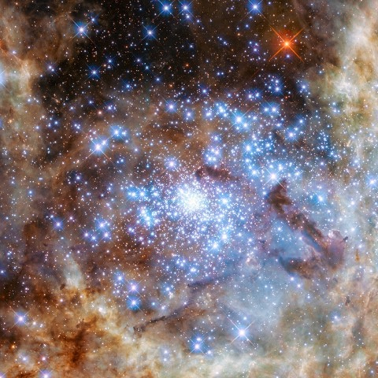
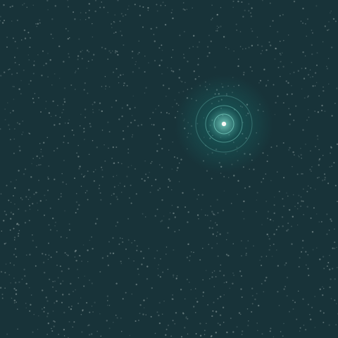
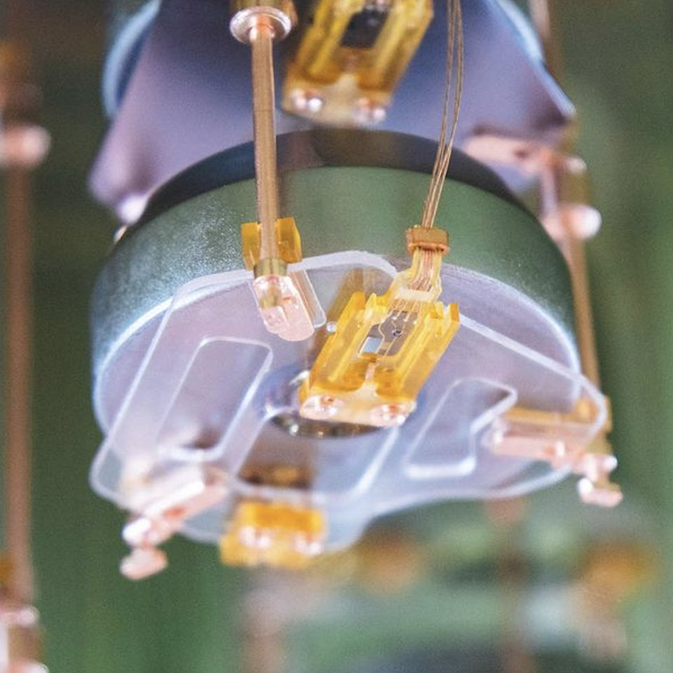
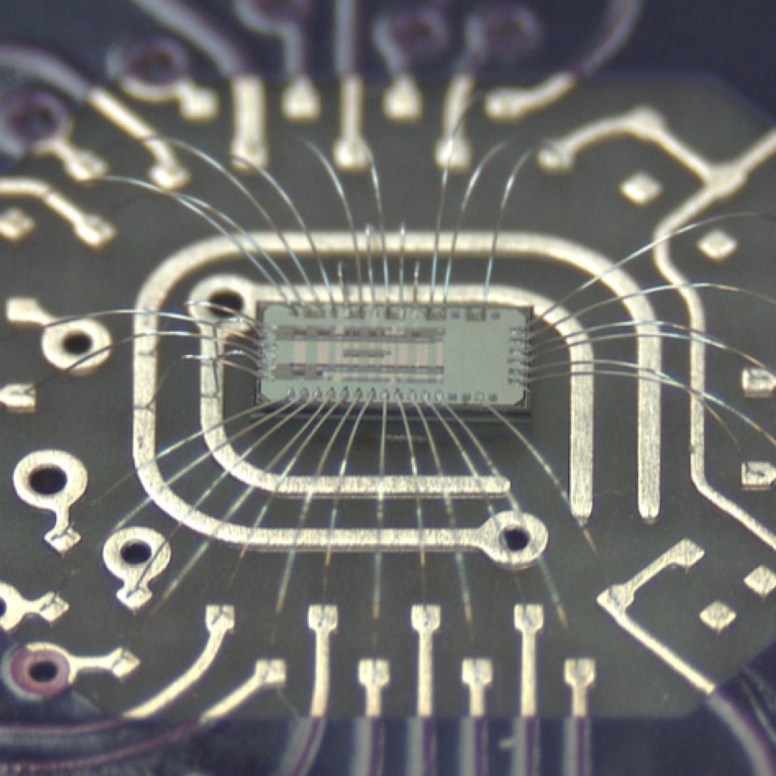
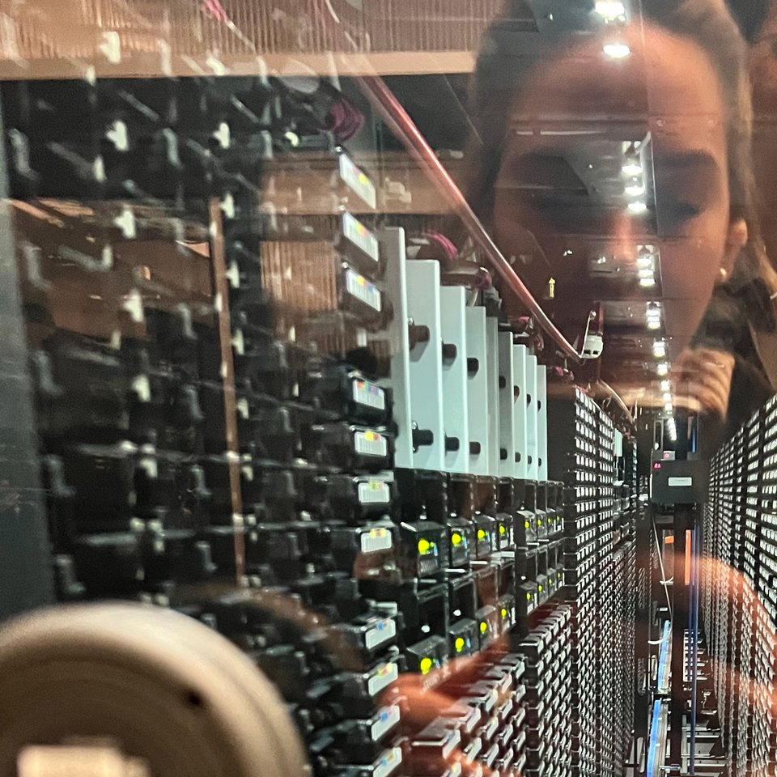

Selected work
Projects
Research, engineering, and graduate projects in physics, scientific computing, and robotics.
01Rare events
-

ProjectDigging in spacetime: massive stars and black holes
Gravitational-wave observations and population models of the massive stars behind black-hole mergers.
-

MethodEstimating rare-event probabilities
Rare-event counting, conditional Monte Carlo, and neural-network estimates of conditional hit probabilities.
02Detector hardware
-

ProjectLMFE production and testing
Fabrication, electrical checks, and assembly of the current LEGEND-200 front end.

ProjectASIC readout electronics
Prototype characterization for the future LEGEND-1000 readout.
03Computing and machine learning in science
-
 Project
ProjectWeighing the weightless: KATRIN and neutrino mass
Statistical models, MCMC, and NERSC computing for Bayesian analysis of the tritium spectrum.
-

PerspectiveThe hidden work behind AI for science
Data generation, computing bottlenecks, and scientific validation in machine-learning pipelines.